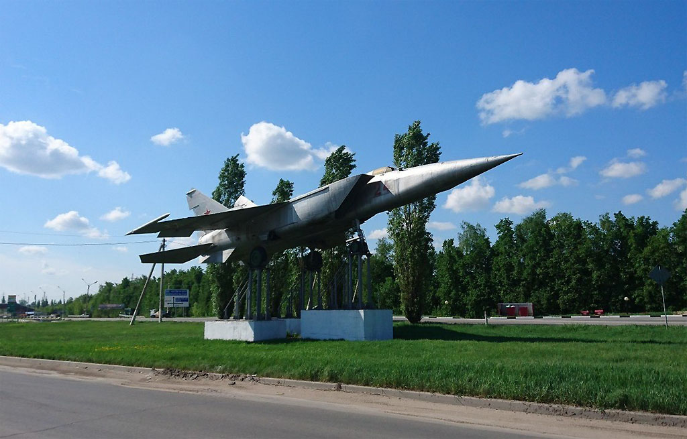

Места нашей области, посвящённые Великой Победе
 Домой
Домой
Самолёт МИГ-25 (Елец)
МИГ-25 установлен в честь летчиков-героев, сражавшихся с немецко-фашистскими захватчиками в Великой Отечественной войне 1941-1945 гг. Памятник открыт 7 мая 2005 года к 60-летию Великой Победы.
Место установки: на Московском шоссе (в районе автостанции № 2), город Елец.
Изображения:
